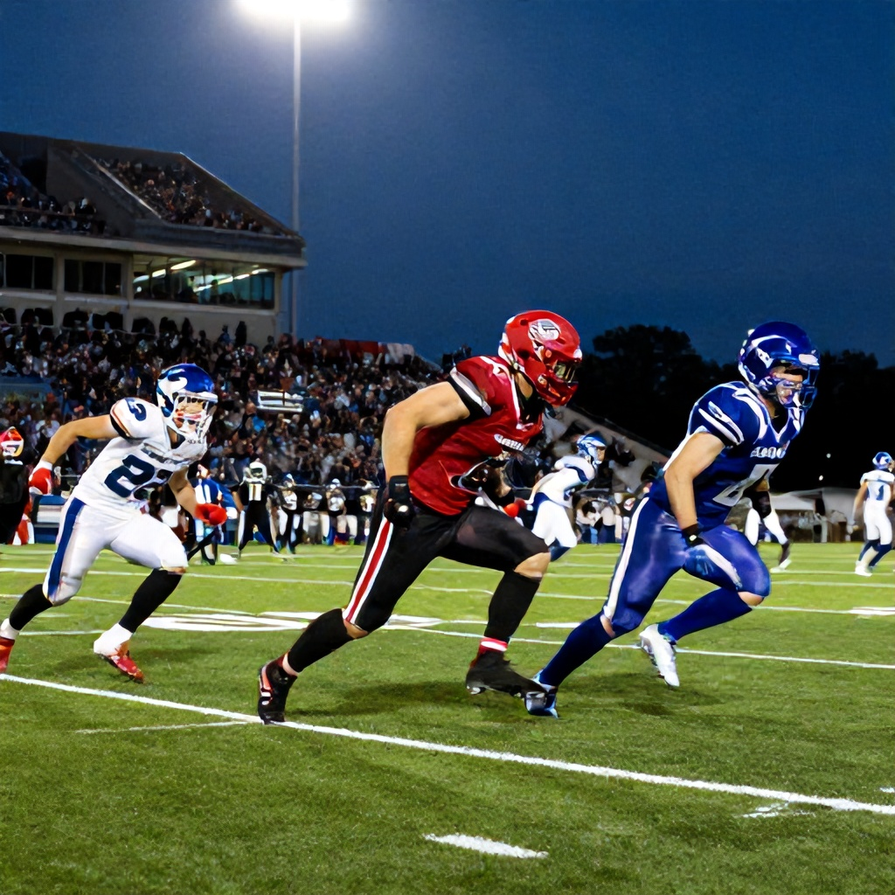

In a thrilling matchup between the Hamilton Tiger-Cats and Winnipeg Blue Bombers, the Tiger-Cats emerged victorious with a 37-27 win on June 12, 2026. The game, played under crisp evening skies, saw Hamilton capitalize on key opportunities and defensive stops to secure a crucial win in the Western Division.
A Strong Offensive Showing
The Tiger-Cats opened the scoring early with a well-executed drive, showcasing their ability to move the ball efficiently down the field. Their red-zone efficiency proved decisive, converting multiple scoring drives into touchdowns. Hamilton’s offense was led by a balanced attack, with both passing and rushing plays contributing to the offensive output.
Winnipeg, despite being favored in the betting market, struggled to contain Hamilton’s momentum. The Blue Bombers’ defense allowed big plays that ultimately cost them the game. Their inability to limit Hamilton’s explosive plays in the second half was a major factor in the outcome.
Betting Context
Pre-game odds had the Blue Bombers as -105 moneyline favorites against Hamilton, who were listed at +170. The spread was set at -3 for Winnipeg, and the total was projected at 51.5 points. While the betting market expected a close game, Hamilton’s performance exceeded those expectations, particularly in the second half where they outscored Winnipeg 27-10.
This result was a significant upset, especially considering the Blue Bombers' recent form and the betting consensus. The Tiger-Cats’ victory not only boosts their playoff hopes but also sends a strong message to other contenders in the West.
What This Means for the Standings
With this win, Hamilton moves closer to securing a playoff berth, while Winnipeg’s loss drops them further in the standings. The outcome underscores the unpredictability of the CFL season and the importance of executing in critical moments.
As the CFL season progresses, games like these remind fans why the league remains so compelling—where any team can rise and challenge the top dogs.